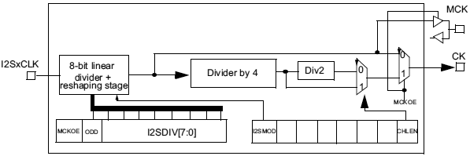

Версия для кварца на 16 МГц:

Для 25 МГц:

Здесь приведен перевод аптноута AN3988 "Clock configuration tool for STM32F40xx/41xx/427x/437x microcontrollers" компании ST.
Для STM32F4xx поддерживается следующая функциональность:
• Конфигурирование системной частоты (system clock), источника тактов HCLK и выходная частота.
• Конфигурирование быстродействия FLASH (latency), т. е. количество тактов ожидания (wait states) в зависимости от частоты HCLK.
• Установка частот PCLK1, PCLK2, TIMCLK (частоты таймера), USBCLK и I2SCLK.
• Генерирование готового к использованию модуля кода system_stm32f4xx.c, который содержит в себе все вышеперечисленные установки (системный исходный файл слоя доступа к периферии, STM32F4xx CMSIS Cortex-M4 Device Peripheral Access Layer).
Схема тактирования микроконтроллеров STM32F4xx
В этой секции описывается схема системной частоты, которая зависит от требований к напряжению питания (VDD) против значения системной тактовой частоты и латентности Flash против значения системной тактовой частоты. Можно использовать три разные источника тактовой частоты, чтобы получить системные такты (SYSCLK):
1. Такты генератора HSI (16 МГц).
2. Такты генератора HSE (4..26 МГц).
3. Основная петля ФАПЧ (phase-locked loop, PLL) для получения тактов, с генератором, управляемым напряжением в петле PLL (PLLVCO). Входная частота системы PLL должна быть между 1 и 2 МГц (рекомендуется использовать 2 МГц, чтобы ограничить джиттер PLL). В PLL участвуют коэффициенты умножения и деления M, N, P и Q.
Все тактовые частоты для периферийных устройств микроконтроллера производятся от частоты SYSCLK, за исключением:
1. Тактовые частоты USB OTG FS clock (48 МГц), RNG (48 МГц) и SDIO (48 МГц), которая приходит от специального выхода PLL (PLL48CLK).
2. Тактовая частота I2S. Чтобы достичь высокого качества звука, такты I2S могут быть получены либо от отдельного узла PLL (PLLI2S), либо от внешней тактовой частоты, которая подключена к ножке I2S_CKIN.

Рис. 1. Схема тактирования STM32F4xx.
Ethernet PTP clock тактовая частота Precision time protocol для Ethernet.
HSE_RTC тактовая частота RTC (HSE, поделенная на коэффициент программируемого делителя).
independent watchdog независимый сторожевой таймер.
LSE OSC Low Speed External, внешний низкоскоростной RC-генератор 32.768 кГц (к которому подключается отдельный низкочастотный кварцевый резонатор).
LSI RC Low Speed Internal, внутренний низкоскоростной RC-генератор 32 кГц.
MCO1, MCO2 Microcontroller clock output, выходы тактов 1 и 2.
OSC_OUT, OSC_IN выводы для подключения высокочастотного кварцевого резонатора (4..26 МГц).
Watchdog enable разрешение сторожевого таймера.
Таблица 2. Количество циклов wait states в зависимости от тактовой частоты CPU HCLK, частота HCLK указана в МГц.
|
Wait states WS (LATENCY) |
VDD 2.7V .. 3.6V |
VDD 2.4V .. 2.7V |
VDD 2.1V .. 2.4V |
VDD 1.8V .. 2.1V |
|
0 WS (1 CPU cycle) |
0 < HCLK ≤ 30 |
0 < HCLK ≤ 24 |
0 < HCLK ≤ 22 |
0 < HCLK ≤ 20 |
|
1 WS (2 CPU cycles) |
30 < HCLK ≤ 60 |
24 < HCLK ≤ 48 |
22 < HCLK ≤ 44 |
20 < HCLK ≤ 40 |
|
2 WS (3 CPU cycles) |
60 < HCLK ≤ 90 |
48 < HCLK ≤ 72 |
44 < HCLK ≤ 66 |
40 < HCLK ≤ 60 |
|
3 WS (4 CPU cycles) |
90 < HCLK ≤ 120 |
72 < HCLK ≤ 96 |
66 < HCLK ≤ 88 |
60 < HCLK ≤ 80 |
|
4 WS (5 CPU cycles) |
120 < HCLK ≤ 150 |
96 < HCLK ≤ 120 |
88 < HCLK ≤ 110 |
80 < HCLK ≤ 100 |
|
5 WS (6 CPU cycles) |
150 < HCLK ≤ 168 |
120 < HCLK ≤ 144 |
110 < HCLK ≤ 132 |
100 < HCLK ≤ 120 |
|
6 WS (7 CPU cycles) |
144 < HCLK ≤ 168 |
132 < HCLK ≤ 154 |
120 < HCLK ≤ 140 | |
|
7 WS (8 CPU cycles) |
154 < HCLK ≤ 168 |
140 < HCLK ≤ 160 |
Генератор тактов I2S
Генерация тактов для интерфейса I2S зависит от наличия частоты MCLK (разрешена она или запрещена), ширины фрейма, и от периферийной частоты I2S (I2SCLK).

Рис. 2. Архитектура генератора тактов I2S.
Частота аудиовыборок может быть 192 кГц, 96 кГц, 48 кГц, 44.1 кГц, 32 кГц, 22.05 кГц, 16 кГц, 11.025 кГц или 8 кГц. Чтобы достичь нужной частоты, линейный делитель (DIV) должен быть запрограммирован по формулам ниже.
Когда генерируется MCLK (установлен бит MCKOE в регистре SPI_I2SPR):
• Fs = I2SxCLK/[(16*2)*((2*I2SDIV)+ODD)*8)] когда фрейм канала шириной 16 бит.
• Fs = I2SxCLK/[(32*2)*((2*I2SDIV)+ODD)*4)] когда фрейм канала шириной 32 бит.
ODD является множителем нечетности для прескалера. Когда MCLK запрещена (очищен бит MCKOE):
• FS = I2SxCLK/[(16*2)*((2*I2SDIV)+ODD))] когда фрейм канала шириной 16 бит.
• FS = I2SxCLK/[(32*2)*((2*I2SDIV)+ODD))] когда фрейм канала шириной 32 бит.